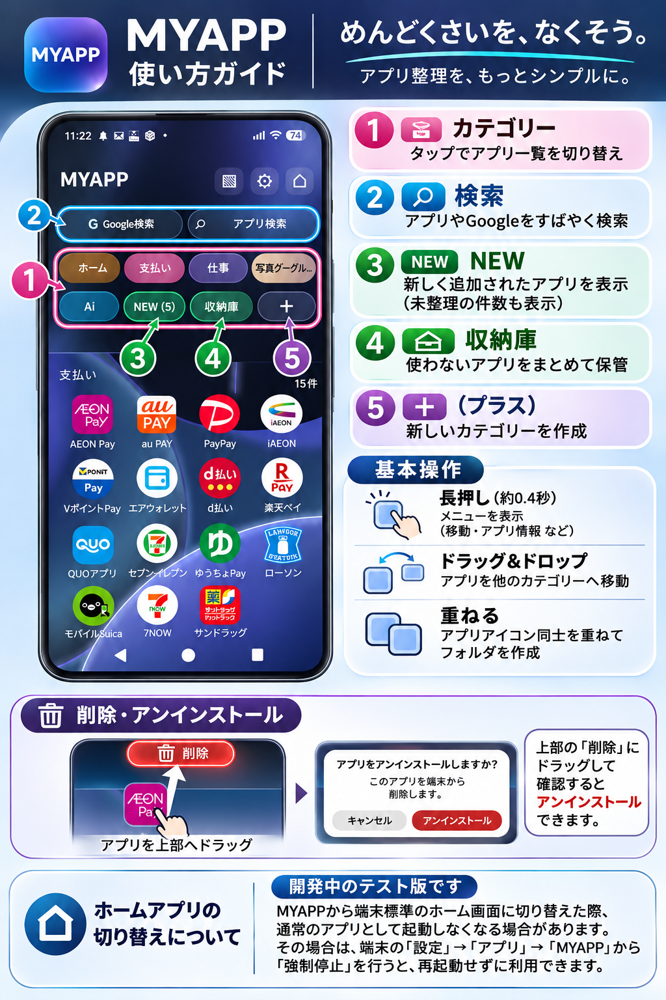

使い方ガイド
めんどくさいを、なくそう。基本操作はこの1枚で確認できます。

開発中のテスト版について
MYAPPから端末標準のホーム画面へ切り替えた後、MYAPPが通常のアプリとして起動しなくなる場合があります。その際は、端末の「設定」→「アプリ」→「MYAPP」→「強制停止」をお試しください。端末によって操作や動作が異なる場合があります。
めんどくさいを、なくそう。基本操作はこの1枚で確認できます。

MYAPPから端末標準のホーム画面へ切り替えた後、MYAPPが通常のアプリとして起動しなくなる場合があります。その際は、端末の「設定」→「アプリ」→「MYAPP」→「強制停止」をお試しください。端末によって操作や動作が異なる場合があります。